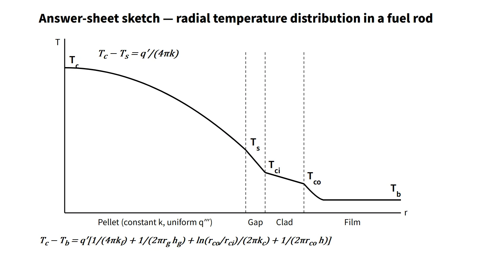
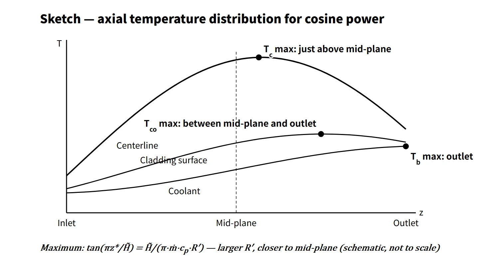

Thermal Hydraulics & Thermodynamics · C-TH-008
Fuel Rod Temperature Distribution (Radial and Axial) — Series Thermal Resistances and Three Different Maxima
From the pellet centerline to the coolant through four series resistances, and why the axial maxima of three temperatures fall in different places.
The fuel rod temperature distribution is the steady-state radial temperature drop from pellet center → pellet surface → gap → cladding → coolant (Tc − Tb = q′·ΣR′), together with the axial temperature variation produced by the coolant temperature rise superimposed on a cosine-shaped linear heat rate; it is the calculational basis for preventing fuel centerline melting (a SAFDL).
The radial magnitude is set by the linear heat rate q′ (W/m); the axial shape is set by q′(z) and the coolant enthalpy rise.
Principle and mechanism
Radial: four thermal resistances in series
At steady state, neglecting axial conduction, the heat q′ generated in the pellet travels radially all the way to the coolant. The thermal resistances per unit length R′ (K·m/W) therefore simply add in series.
| Zone | Temperature drop | Remarks |
|---|---|---|
| Pellet (uniform heat generation) | Tc − Ts = q′/(4πkf) | Independent of radius |
| Gap | Ts − Tci = q′/(2πrg·hg) | hg: gap conductance |
| Cladding (no heat generation) | Tci − Tco = q′·ln(rco/rci)/(2πkc) | Cylindrical conduction |
| Film (coolant) | Tco − Tb = q′/(2πrco·h) = q″/h | h: Dittus–Boelter |
Inside the pellet the profile is the parabola T(r) = Tc − q‴r²/(4kf). Setting r = Rf and using q‴πRf² = q′, Rf drops out. With uniform heat generation and the same k (and the same surface temperature), the center-to-surface temperature difference is the same at the same q′, whether the pellet is thick or thin. Changing the radius does change the gap and film resistances and the surface temperature, however, so the centerline temperature itself can differ. That is why the centerline melting limit is managed in kW/m (linear heat rate).
As an example, take a 17×17-type geometry (pellet 8.19 mm, cladding 8.36/9.50 mm), 15.5 MPa, local coolant at 310 °C and a fresh-fuel gap conductance hg = 5,700 W/m²·K. The results:
- q′ 17.9 kW/m (average): film 16, cladding 22, gap 122, pellet 389 °C → centerline about 859 °C
- q′ 40 kW/m (local high power): film 35, cladding 48, gap 273, pellet 1,260 °C → centerline about 1,926 °C
The film heat transfer coefficient from Dittus–Boelter (Nu = 0.023Re0.8Pr0.4) is about 38 kW/m²·K. More than 70 % of the drop occurs inside the pellet, followed by the gap. At 40 kW/m, the cladding surface temperature from the single-phase relation (345.4 °C) approaches the saturation temperature (344.8 °C). The onset of boiling needs a separate check; in fully developed nucleate boiling the wall superheat is only a few °C (about 2 °C by the Jens–Lottes correlation).
![Radial temperature profiles from the pellet center through the gap, cladding and coolant zones for linear heat rates of 17.9 kW/m (centerline 859 °C, pellet surface 470 °C) and 40 kW/m (centerline 1,926 °C, pellet surface 666 °C) with coolant at 310 °C, a fuel rod cross-section image, and a table of temperature drops: pellet 389 and 1,260 °C, gap 122 and 273 °C, cladding 22 and 48 °C, film 16 and 35 °C, total 549 and 1,616 °C, with h = 37.8 kW/(m²·K), gap conductance 5,700 W/(m²·K) and cladding conductivity about 17 W/(m·K)](../../assets/images/concepts/c-th-008-fuel-rod-temperature/fig1-radial-temperature.webp)
UO₂ thermal conductivity and the conductivity integral
The thermal conductivity k of UO₂ is not constant. For fresh fuel it is about 8.4 W/m·K at 300 K (27 °C) and 3.4 W/m·K at 1,000 K (727 °C), reaching a minimum of about 2.1 W/m·K at about 1,770 °C and then rising again because of the electronic contribution (modified NFI correlation, 95 %TD, NUREG/CR-7024). Instead of the constant-k formula, the following integral is used:
- ∫(Ts → Tc) k(T) dT = q′/(4π)
Tabulating or plotting F(T) = ∫₀ᵀ k dT makes the calculation easy. Since F(Tc) = F(Ts) + q′/4π, the centerline temperature is the temperature whose F value equals the surface temperature's F value plus q′/4π. With this model the integral from 0 °C to 2,800 °C is about 90 W/cm, on the same level as the "about 93 W/cm to the melting point" often quoted in the literature.
As burnup proceeds, k decreases because of dissolved fission products and irradiation defects. The trend measured at Halden is a decrease of about 5–7 % per 10 GWd/t (NRC IN 2009-23). As a sensitivity changing only k at the same q′ and surface temperature, at 50 GWd/tU the centerline temperature rises from 859 to 1,114 °C at average power and from 1,926 to 2,275 °C at high power. In a real burnup history, gap closure from pellet swelling and cladding creep-down increases hg (an offsetting factor), while fission gas release degrades the gap gas conductivity (an aggravating factor). At the same time the UO₂ melting point (about 2,840 °C unirradiated) also decreases with burnup.
![Left: UO₂ thermal conductivity from 300 to 2,800 °C for burnups 0, 30 and 50 GWd/tU, falling from about 5.4 W/m·K to a minimum near 1,770 °C and rising again, lower at higher burnup, with a dashed line for a simplified constant k = 2.7. Right: conductivity integral F(T) from 0 to about 90 W/cm at 2,800 °C, showing the centerline read from F(Tc) = F(Ts) + q′/4π with q′/4π = 31.8 W/cm: surface 666 °C gives a centerline of 1,926 °C at burnup 0 (36.6 to 68.4 W/cm) and 2,275 °C at burnup 50 (17.7 to 49.5 W/cm)](../../assets/images/concepts/c-th-008-fuel-rod-temperature/fig3-uo2-conductivity-integral.webp)
Axial: the three temperatures peak in different places
If the axial linear heat rate is a chopped cosine q′(z) = q′₀cos(πz/H̃) (z from the core mid-plane), the coolant energy balance gives:
- Tb(z) = Tin + (q′₀H̃/πṁcp)·[sin(πz/H̃) + sin(πH/2H̃)]
- Temperature at any radial position: T(z) = Tb(z) + q′(z)·R′ (R′: thermal resistance from the coolant to that position)
Treating cp and R′ as constant, neglecting axial conduction and setting dT/dz = 0 gives tan(πz*/H̃) = H̃/(π·ṁ·cp·R′). The right-hand side is positive, so the maximum is always downstream of (above) the mid-plane, and the larger R′, the closer it is to the mid-plane. If z* falls beyond the outlet, the maximum is at the outlet (zmax = min[H/2, z*]).
- Coolant: R′ = 0 → maximum at the outlet
- Cladding surface: R′ = film resistance only (small) → between mid-plane and outlet (at the outlet if the flow is low)
- Fuel centerline: R′ = film + cladding + gap + pellet (large) → just above the mid-plane
For an average-power rod (q′₀ = 25.8 kW/m, inlet 291 °C, 0.325 kg/s per rod), with property variation included, the coolant peaks at the outlet at 327.3 °C, the cladding surface at 0.72H at 338.6 °C, and the centerline at 0.51H (about 3 cm downstream of the mid-plane) at about 1,194 °C. The centerline maximum differs from the mid-plane value by less than 1 °C. This calculation uses k(T) directly, so R′ varies slightly with position, but the conclusion matches the constant-property analytical result (0.74H, about 3 cm above the mid-plane).

What it means in a plant
- Design: one pillar of the core safety limits and SAFDLs is "no centerline melting". Design calculates the centerline temperature at the peak linear heat rate of normal operation and AOOs, reflecting burnup-dependent k, gap and melting point. CE-type plants (OPR1000, APR1400) monitor local power density (LPD, kW/ft) with COLSS and trip on it through the CPCs.
- Operation: the centerline temperature is not measured directly; the linear heat rate obtained from in-core instrumentation is compared with the limit.
- Safety analysis: fuel stored energy (average temperature) sets the initial PCT in a LOCA, and the fuel average temperature enters the Doppler reactivity. Omitting conductivity degradation makes both results non-conservative.
Regulatory and design criteria
For example, in the United States:
| Basis | Key point |
|---|---|
| 10 CFR 50 Appendix A, GDC 10 | SAFDLs not exceeded during normal operation and AOOs |
| NUREG-0800 SRP 4.2 | Fuel rod failure criteria: prevention of pellet overheating (centerline melting) |
| SRP 4.4 | Thermal-hydraulic design for fuel temperature and DNB |
| NUREG-1432 SL 2.1.1.2 | Peak centerline temperature limit (example: 5,080 °F, decreasing by 58 °F per 10,000 MWd/MTU) |
| NRC IN 2009-23, IN 2011-21 | Warning on codes that do not model burnup degradation of conductivity; effect on ECCS evaluation PCT |
The temperature distribution equations themselves are unchanged; what has changed is the analysis input. Fuel performance codes approved before 1999 did not model burnup degradation of thermal conductivity; after the 2009 information notice, there has been a move to models that include it (for example Westinghouse PAD5). Simple hand calculations usually assume a constant k, whereas the real k is a function of temperature and burnup.
Easily confused pairs
| Fuel centerline temperature | Cladding surface temperature | Coolant temperature | |
|---|---|---|---|
| Governing factors | q′, k(T, burnup), hg | q″, h (held near Tsat when boiling) | Accumulated heat, ṁcp |
| Axial maximum | Just above mid-plane | Between mid-plane and outlet (outlet in some conditions) | Outlet |
| Related limit | Centerline melting (SAFDL) | DNB (MDNBR), oxidation | Saturation margin, outlet temperature |
| Monitored variable | Linear heat rate (LPD) | DNBR | Core exit temperature |
Heat flux q″ governs the cladding surface and DNB; linear heat rate q′ governs the centerline temperature. Mixing them up leads to the mistaken conclusion that "a larger pellet diameter raises the centerline temperature".
Key points at a glance
- Definition: steady-state radial temperature drop = series resistances of pellet + gap + cladding + film; the axial variation is set by q′(z) and the coolant temperature rise.
- Pellet: Tc − Ts = q′/(4πk) (uniform generation, constant k), independent of radius → the limit is a linear heat rate (kW/m).
- Variable k: ∫(Ts → Tc) k dT = q′/4π; UO₂ k decreases with temperature up to about 1,770 °C and with burnup (about 5–7 % per 10 GWd/t).
- Gap: hg of thousands to tens of thousands of W/m²·K; large ΔT in fresh fuel, smaller after gap closure with burnup.
- Film: Dittus–Boelter; wall superheat of a few °C in fully developed nucleate boiling.
- Example: 40 kW/m → ΔT film 35, cladding 48, gap 273, pellet 1,260 °C; centerline about 1,926 °C.
- Axial: tan(πz*/H̃) = H̃/(π·ṁ·cp·R′) (constant cp, R′) → coolant at the outlet, cladding surface between mid-plane and outlet, centerline just above the mid-plane.
- Safety: prevention of centerline melting (SAFDL, SL); stored energy → LOCA PCT; Doppler.

